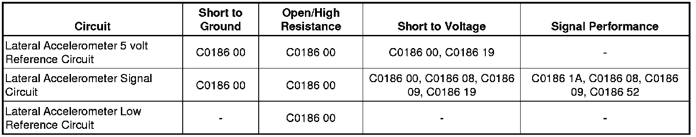

C0186
DTC C0186
Diagnostic Instructions
* Perform the Diagnostic System Check - Vehicle (Initial Inspection and Diagnostic Overview) prior to using this diagnostic procedure.
* Review Strategy Based Diagnosis (Initial Inspection and Diagnostic Overview) for an overview of the diagnostic approach.
* Diagnostic Procedure Instructions (Initial Inspection and Diagnostic Overview) provides an overview of each diagnostic category.
DTC Descriptor
DTC C0186 00
- Lateral Accelerometer Circuit
DTC C0186 08
- Lateral Accelerometer Circuit Signal Invalid
DTC C0186 09
- Lateral Accelerometer Circuit Rate of Change Above Threshold
DTC C0186 19
- Lateral Accelerometer Circuit Signal Amplitude Above Maximum
DTC C0186 1A
- Lateral Accelerometer Circuit Bias Level Out Of Range
DTC C0186 52
- Lateral Accelerometer Circuit Compare Failure
Diagnostic Fault Information

Circuit/System Description
The electronic brake control module (EBCM) uses the lateral accelerometer signal to determine the lateral forces acting on a vehicle during a turn or a skid. The EBCM uses the signal from the lateral accelerometer as one of the inputs to operate the vehicle stability enhancement system (VSES).
Conditions for Running the DTC
C0186 00, 09, and 1A
* The ignition is ON.
* Ignition voltage is greater than 8 volts.
C0186 08
* Ignition voltage is ON.
* Ignition voltage is greater than 8 volts.
* The vehicle speed is greater than 0 km/h.
C0186 19
* Ignition voltage is ON.
* Ignition voltage is greater than 8 volts.
* The vehicle is stationary.
C0186 52
* Ignition voltage is ON.
* Ignition voltage is greater than 8 volts.
* DTC C0196 is not set.
* The yaw rate is less than 8 degrees per second.
Conditions for Setting the DTC
C0186 00, 09, and 1A
One of the following conditions exist:
* The lateral accelerometer sensor input voltage is less than 0.15 volt.
* The lateral accelerometer sensor input voltage is greater than 4.85 volts for 0.03 second.
C0186 08
The lateral accelerometer signal voltage does not increase 0.5 volt during the lateral accelerometer sensor self test.
C0186 09
The lateral accelerometer signal exceeds 108 m/s(2) (11 g) per second twice within 0.2 second.
C0186 19
The lateral accelerometer signal is greater than 4.9 m/s(2) (0.5 g) for 1 second.
C0186 1A
Both of the following conditions exist:
* The compensated bias value of the lateral accelerometer sensor is greater than 2.9 m/s(2) (0.3 g).
* The yaw rate is centered.
C0186 52
The slip rate error is greater than 4.9 m/s(2) (0.5 g) 60 times within one drive cycle.
Action Taken When the DTC Sets
If equipped, the following actions will occur:
* The EBCM disables the VSES for the duration of the ignition cycle.
* The vehicle dynamics caution (VDC) indicator illuminates.
* The driver information center (DIC) displays the SERVICE STABILITRAK message.
* The antilock brake system (ABS) and the traction control system (TCS) remain functional.
Conditions for Clearing the DTC
* The condition for the DTC is no longer present and the DTC is cleared with a scan tool.
* The EBCM automatically clears the history DTC when a current DTC is not detected in 100 consecutive drive cycles.
Diagnostic Aids
The lateral accelerometer is packaged with the yaw rate sensor as a single component.
Reference Information
Schematic Reference
Antilock Brake System Schematics ([1][2]Antilock Brakes / Traction Control Systems)
Connector End View Reference
Component Connector End Views (Connector Views)
Description and Operation
ABS Description and Operation (Description and Operation)
Electrical Information Reference
* Circuit Testing (Component Tests and General Diagnostics)
* Connector Repairs (Component Tests and General Diagnostics)
* Testing for Intermittent Conditions and Poor Connections (Component Tests and General Diagnostics)
* Wiring Repairs (Component Tests and General Diagnostics)
Scan Tool Reference
Control Module References (Programming and Relearning) for Scan Tool Information
Circuit/System Testing
1. Ignition OFF, disconnect the harness connector at the yaw and lateral/long acceleration sensor.
2. Test for less than 5 ohms of resistance between the low reference circuit terminal D and ground.
• If greater than the specified range, test the low reference circuit for an open/high resistance. If the circuit tests normal, replace the EBCM.
3. Ignition ON, test for 4.8-5.2 volts between the 5 volt reference circuit terminal B and ground.
• If less than the specified range, test the 5 volt reference circuit for a short to ground or an open/high resistance. If the circuit tests normal, replace the EBCM.
• If greater than the specified range, test the 5 volt reference circuit for a short to voltage. If the circuit tests normal, replace the EBCM.
4. Verify the scan tool Lateral Accelerometer Signal parameter is less than 0 volts.
• If greater than the specified range, test the signal circuit terminal E for a short to voltage. If the circuit tests normal, replace the EBCM.
5. Install a 3 A fused jumper wire between the signal circuit terminal E and the 5 volt reference circuit terminal B. Verify the scan tool Lateral Accelerometer Signal is greater than 4.8 volts.
• If less than the specified range, test the signal circuit for a short to voltage or an open/high resistance. If the circuit tests normal, replace the EBCM.
6. If all circuits test normal, test or replace the yaw and lateral/long acceleration sensor.
Repair Instructions
Perform the Diagnostic Repair Verification (Verification Tests) after completing the diagnostic procedure.
* Vehicle Yaw Sensor with Vehicle Lateral Accelerometer Replacement (Yaw Sensor with Vehicle Lateral Accelerometer Replacement) (w/o MX7)
* Vehicle Yaw Sensor with Vehicle Lateral and Longitudinal Accelerometer Replacement (Yaw Sensor with Vehicle Lateral and Longitudinal Accelerometer Replacement) (MX7)
* Control Module References (Programming and Relearning) for EBCM replacement, setup, and programming